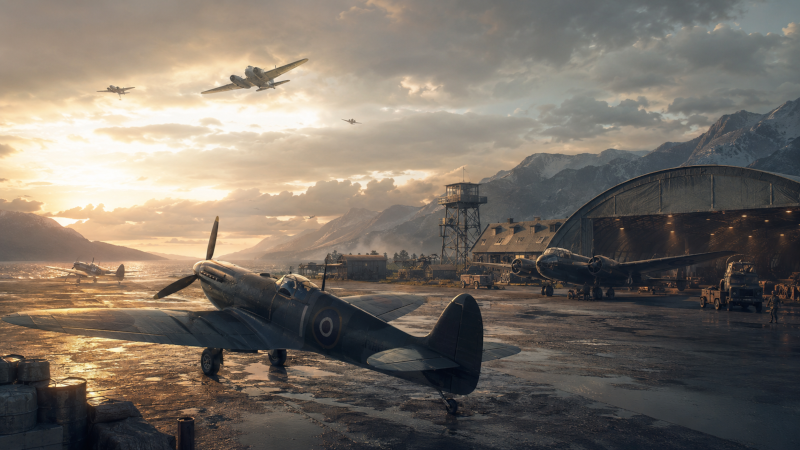

Авиация в мультиплеере Battlefield 5 остается важным и требовательным к навыкам игрока элементом игры. Боевые самолеты способны кардинально изменить ход боя, срывая оборону противника и уничтожая бронетехнику. Управление лётной техникой новым игрокам поначалу кажется сложным, поэтому новичкам потребуется время на адаптацию. Данная статья охватывает все аспекты пилотирования, а если хочется попробовать другие проекты с глубоким погружением, загляните на сайт Игры Ростелеком.

Классификация самолетов в Battlefield 5: быстрый обзор
В шутере доступно три ключевых класса боевой авиации: истребители, штурмовики и тяжелые бомбардировщики. Каждый из них выполняет собственную роль на поле боя, а перечень доступных самолетов определяется выбранной стороной конфликта — Союзниками или Осью.
Истребители предназначены для перехвата вражеской авиации и установления контроля над воздушным пространством. Бомбардировщики наносят удары по наземной технике, укрепленным позициям и могут за короткое время уничтожить тяжелый танк. Штурмовики занимают промежуточное положение: они способны участвовать в маневренных воздушных боях и одновременно наносить точечные удары по технике противника.
Сравнение самолетов Battlefield 5 помогает оценить их роль в бою, сильные стороны и основные ограничения:
Обучение полетам в Battlefield 5: с чего начинать?
Лучшее место для первых шагов — учебный полигон, где отсутствует давление реального боя. Здесь можно разбиться сколько угодно раз, пока мышечная память не запомнит нужные комбинации.
Алгоритм действий для новичка:
Хороший пилот начинается с умения летать по прямой без потери скорости. Полигон позволяет быстро возрождаться после падения и менять машину в любое время.
Стандартных настроек нередко оказывается мало для удобной игры и стабильных побед. Опытные киберспортсмены советуют увеличивать чувствительность постепенно, добавляя по несколько процентов каждые два-три дня. Ускорение прицела лучше отключить, установив его на нулевое значение, чтобы движения камеры оставались предсказуемыми.
Осевую мертвую зону рекомендуется сохранять на уровне около 15%, а центральную — в пределах 0–5%. Показатели выше 15% создают ощущение задержки и мешают добиться быстрого отклика управления. При использовании геймпада мертвую зону триггеров также желательно уменьшить до минимального комфортного значения.
Смену камеры стоит назначить на отдельную удобную клавишу. Вид от третьего лица упрощает контроль окружающего пространства, тогда как камера от первого лица позволяет точнее атаковать наземные цели.
Данный класс отличается максимальной скоростью и маневренностью. Главная задача пилота заключается в защите союзных бомбардировщиков и перехвате вражеских штурмовиков. В воздушных дуэлях легкая машина имеет неоспоримое преимущество перед неповоротливыми гигантами.
Обе модификации считаются отличным выбором для Союзников, но отличаются по назначению. Версия VA оснащена восемью пулеметами калибра .303, выдавая высокую плотность огня по летке. Модель VB несет две двадцатимиллиметровые пушки и четыре пулемета, представляя собой универсальную конфигурацию.
Сравнение модификаций Spitfire Mk VA и Spitfire Mk VB позволяет определить особенности их вооружения, рекомендуемых специализаций и боевого применения:
Если команде требуется чистый перехватчик, выбирайте VA. Для поддержки наземных сил и уничтожения зениток лучше подойдет VB.
Немецкая техника делает ставку на скорость и мощь первого удара. Базовая комплектация G-2 включает два пулемета MG 17, машина предсказуема и подходит для атак с сохранением энергии. Версия G-6 действует агрессивнее благодаря крупнокалиберным орудиям и высокой скороподъемности.
Основная тактика для "Мессершмиттов" называется "бум-зум". Пилот набирает высоту, разгоняется в пикировании, выполняет короткую атаку на проходе и уходит вверх. Ввязываться в горизонтальные виражи категорически не рекомендуется, так как британец перекрутит немца.
На тихоокеанских картах сталкиваются две противоположные философии конструирования. Японский A6M Zero — легкий аппарат, чья сила кроется в затяжных горизонтальных виражах. Американский F4U Corsair тяжелее, лучше защищен и наносит огромный урон в лобовых столкновениях.
Пилоту Zero следует избегать прямых попаданий из-за хрупкости конструкции, заходя врагу в хвост. На Corsair нужно использовать бронирование, атаковать сверху короткими проходами и не вступать в маневренный ближний бой.
Этот гибридный класс способен огрызаться в воздухе, но его истинное призвание — уничтожение наземных сил. Они эффективно выбивают пехоту, легкую технику и расчеты противовоздушной обороны.
Mosquito выделяется точным бомбометанием и мощной пушкой, выступая в роли идеального охотника за наземными целями. Немецкий Bf 110 полагается на тридцатимиллиметровое орудие, наносящее критический урон бронетехнике с дистанции до трехсот метров.
По маневренности тяжелые машины уступают одномоторным аналогам. Оптимальный подход — атака на бреющем полете с заходом с высоты и немедленным выходом из зоны поражения.
Знаменитая "Штука" специализируется на точечных ударах с пикирования под углом до девяноста градусов. Бомба сбрасывается на малой высоте, обеспечивая ювелирную точность, однако курсовые пулеметы здесь откровенно слабые.
Американский A-20 Havoc действует иначе, проносясь над полем брани на высокой скорости. Он использует курсовое вооружение и сброс малого калибра, отлично справляясь со скоплениями вражеских солдат.
Медлительные гиганты обладают колоссальным разрушительным потенциалом. Успех вылета зависит от правильного выбора высоты: слишком низкий заход приведет к уничтожению от зениток, а излишне высокий снизит точность попаданий.
Британский Blenheim предлагает легкий и быстрый вариант бомбардировки, позволяющий оперативно уйти от преследования. Немецкий Ju 88 выступает тяжелой платформой с огромной нагрузкой и крепкими оборонительными турелями.
Прокачка позволяет последовательно улучшать выживаемость, бомбовую нагрузку, скорость и оборонительные возможности самолета в зависимости от выбранного стиля игры.
Ключевой навык для Ju 88A — сброс шестнадцати бомб по пятьдесят килограмм. Это резко увеличивает площадь поражения, превращая самолет в кошмар для вражеской пехоты.
Развитие техники через систему навыков определяет ее роль до конца матча. Левая ветка традиционно усиливает борьбу с техникой, а правая направлена на подавление пехоты и оборону.
Для воздушных дуэлей выбирайте легкие скорострельные пулеметы и улучшение двигателя. Истребитель танков собирается через тысячекилограммовую бомбу и воздушные тормоза. Антипехотный билд требует множества мелких бомб и усиленных турелей.
Любая фанатская база знаний (вика) подтверждает: прокачивать нужно сильные стороны аппарата. Медленный бомбардировщик не станет перехватчиком, какие бы перки вы ни выбрали.
Разница между новичком и асом заключается в знании конкретных фигур высшего пилотажа. В сообществе подобные маневры часто обсуждают, а записи геймплея собирают огромные просмотры (views) на стриминговых платформах. Многие киберспортсмены записывают видео своих удачных вылетов, чтобы детально разобрать ошибки.
"Иммельман" представляет собой полупетлю с разворотом, позволяющую сменить направление и набрать высоту. "Сплит-С" работает наоборот: машина задирает нос, гасит скорость и уходит в контролируемое пикирование. "Ножницы" заставляют преследователя проскочить вперед за счет серии резких кренов.
При штурмовке приоритет отдается системам ПВО, затем тяжелой бронетехнике и только потом пехоте. Угол атаки лучше выбирать с фланга или кормы, не зависая над целью дольше пары секунд.
Противовоздушная оборона остается главной угрозой для авиации. Основной принцип выживания — никогда не заходить на цель по прямой траектории.
Используйте складки местности, здания и холмы, чтобы сократить время нахождения в зоне видимости зенитчика. Атака должна быть молниеносной: заход, сброс боеприпасов и немедленный уход на безопасную дистанцию.
Командное взаимодействие значительно повышает шансы на успех. Один пилот отвлекает огонь на себя, пока второй уничтожает расчет с безопасной высоты.
Посадка необходима для полного восстановления прочности аппарата. Самостоятельный ремонт в небе возможен, но он не возвращает сто процентов здоровья.
Заранее определите расположение взлетной полосы, чтобы не искать ее под шквальным огнем. Уберите тягу до минимума, начните плавное снижение и выровняйте курс параллельно земле.
После касания удерживайте ось, не допуская съезда на грунт. Оставайтесь на месте несколько секунд, пока механики не завершат обслуживание. Садиться стоит только при отсутствии врагов поблизости.
Авиация в мультиплеерных баталиях требует терпения и долгих тренировок. Опытный пилот способен в одиночку переломить ход сражения, обеспечив команде победу. Начинайте с простых перехватчиков, постепенно осваивая сложные фигуры пилотажа и штурмовку. Практика обязательно принесет плоды, превратив вас в настоящую грозу небес.
Для ускоренной прокачки выбирайте режимы, в которых на карте постоянно находится большое количество вражеской техники. Старайтесь уничтожать наиболее важные цели и перед началом игровой сессии используйте доступные усилители опыта.
Какой самолет лучше выбрать новичку?
Начинающим пилотам подойдут британский Spitfire Mk VA и немецкий Bf 109 G-2. Эти самолеты отличаются понятным управлением, стабильным поведением в воздухе и не требуют сложной настройки специализаций на первых этапах.
Можно ли уничтожить самолет выстрелом из танковой пушки?
Такая возможность существует, но для успешного попадания необходимо правильно рассчитать упреждение и выбрать подходящий момент для выстрела. Определенную роль играет и удача, поэтому подобные уничтожения считаются особенно эффектными и сложными среди танкистов.
Для пополнения патронов и ракет необходимо пролететь через специальную точку снабжения, обозначенную соответствующим значком на интерфейсе. Боеприпасы восстановятся автоматически, однако для полноценного ремонта корпуса самолета потребуется вернуться на аэродром.